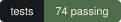
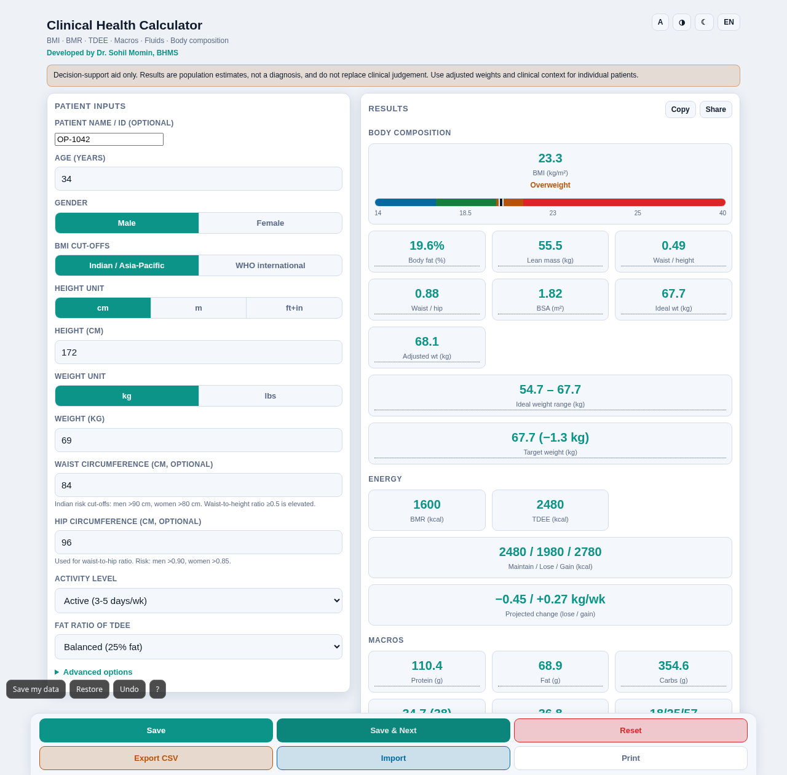
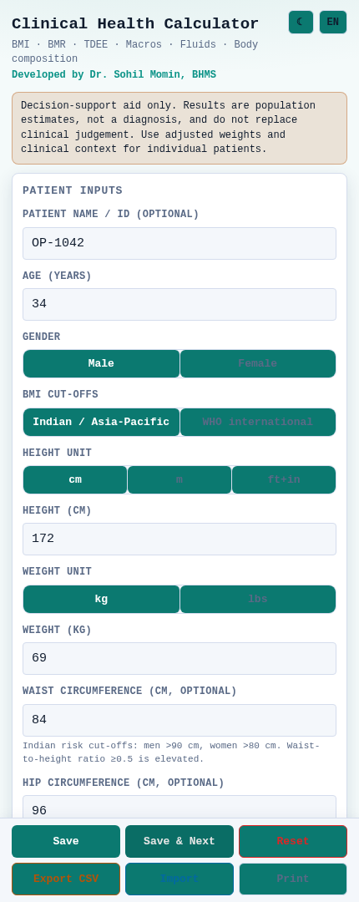

One HTML file for adult outpatients. Enter age, sex, weight and height; read body composition, energy targets, a macro split, fluid needs, creatinine clearance, a dose and a stroke-risk score — each printed with the formula and the values that produced it.

A decision-support aid, not a diagnosis. Every figure is a population estimate — read it with the patient in front of you.

The buttons drive the app in the frame — it is the calculator itself, not a picture of it.
Nothing here is a lookup table. Each row is arithmetic the app performs on the values you type, using a published equation, and each one is reproduced in the app's own "Show the working" panel.
A calculator that only prints 23.3 asks for faith. This one opens a panel listing every result with its formula and your own values substituted, so a wrong entry or an unexpected cut-off is visible on the screen rather than buried in the code.
It is also what makes the app teachable: a student can follow the arithmetic, and a colleague can audit it without reading JavaScript.
There is nobody to register with and nothing to verify. Open the file and use it.
No font, no script, no image and no beacon is fetched from anywhere. Load it once, then unplug the network.
It does not decide what is wrong with a patient. It computes estimates and states the cut-offs it applied.
The dosing tiles multiply a rate by a weight or a surface area. They do not choose the drug, the rate or the patient.
Saved entries live in this browser. Export is CSV for a record you keep, or AES-256-GCM under a passphrase you choose — the key never leaves the page.
Each saved entry carries the digest of the one before it. "Verify log" names the first entry that no longer matches — an edit, not an attacker holding the whole file.
Photographed from the app itself, with a patient entered — inputs and saved entries on the left, a sticky results panel on the right, and the working panel open at the foot of the results.

Every build comes from the same commit as the demo above, and each carries the app's own icon — the ECG mark, drawn in this repository and stamped into the Windows executable and the Android launcher.
No. It is one self-contained HTML file with no external requests — no fonts, scripts, images or analytics. Download index.html and open it, or use the Windows or Android build, and it works with the network switched off.
In your own browser's localStorage, on that device only. There is no server and no sync. Export to CSV if you need a record elsewhere, and clear the entries when you are done.
BMR: Mifflin–St Jeor (1990). TDEE: the standard 1.2–1.9 activity multipliers. BMI: WHO and WHO Asia-Pacific / ICMR cut-offs. IBW: Devine (1974). BSA: Mosteller (1987). Body fat: Deurenberg (1991). Creatinine clearance: Cockcroft–Gault (1976). Stroke risk: CHA₂DS₂-VASc, Lip et al. (2010). Fluids: 30 mL/kg/day baseline. Every one of them is printed in the app next to its result.
Adult outpatients. It carries an adult-only guard and caution flags for renal, hepatic and cardiac disease, athletes and paediatric patients, because the equations assume adults with ordinary body composition.
Yes — save entries with a patient name or ID, export and import CSV with formula-injection protection, print or save as PDF, and copy or share a formatted text summary.
No. It is a decision-support aid. Results are population estimates, not a diagnosis, and do not replace clinical judgement. Use adjusted weights and the clinical context for the patient in front of you.
Yes. docs/play/index.html is the built app and src/clinical-health-calculator.html is the same app unminified and commented. The self-tests run with npm test.